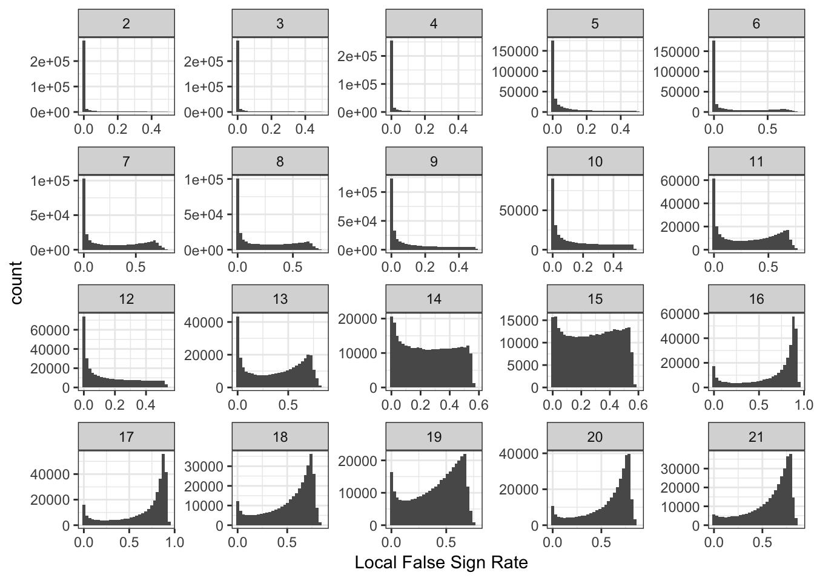
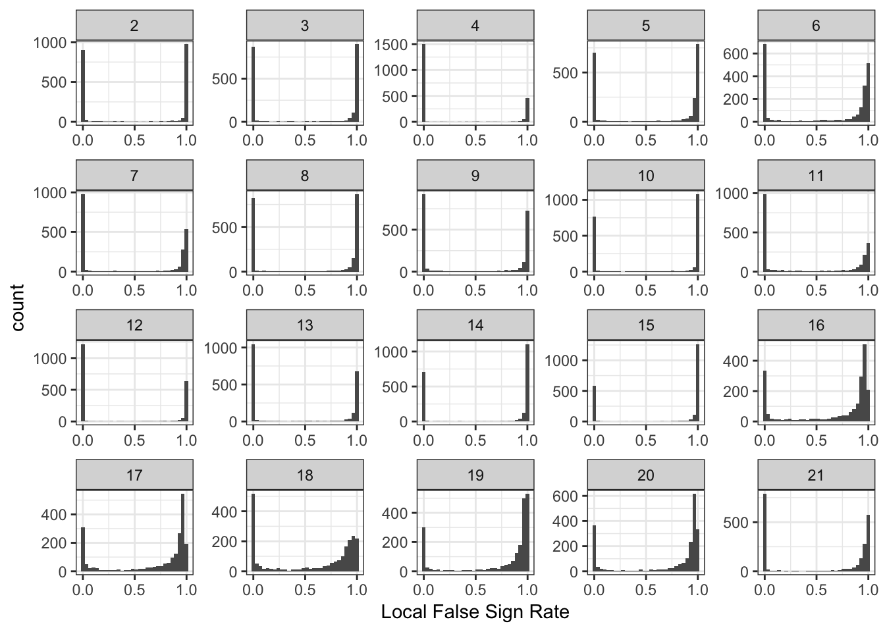
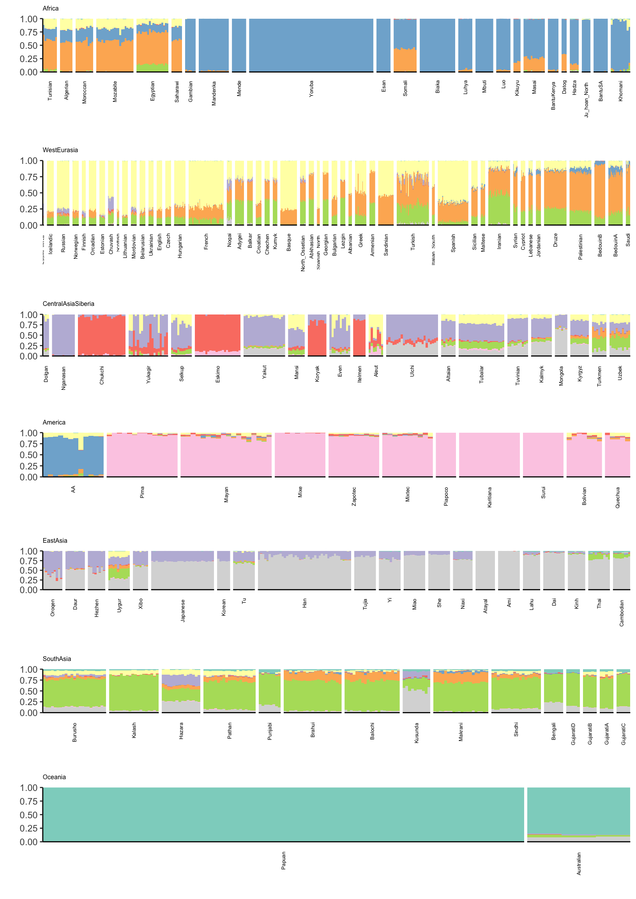
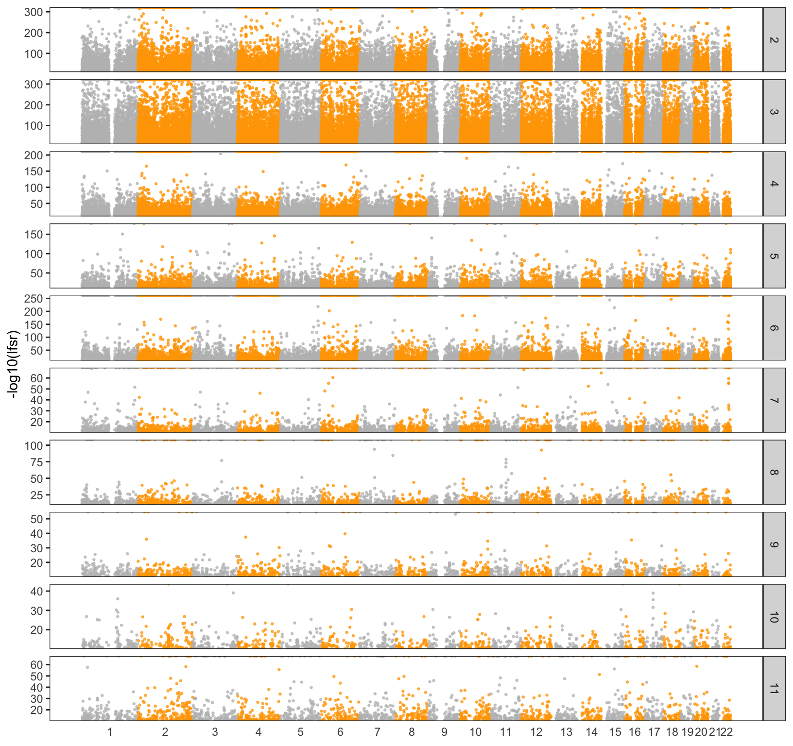

Human Origins Array Global Results
jhmarcus
2019-02-15
Last updated: 2019-03-05
Checks: 6 0
Knit directory: drift-workflow/analysis/
This reproducible R Markdown analysis was created with workflowr (version 1.2.0). The Report tab describes the reproducibility checks that were applied when the results were created. The Past versions tab lists the development history.
Great! Since the R Markdown file has been committed to the Git repository, you know the exact version of the code that produced these results.
Great job! The global environment was empty. Objects defined in the global environment can affect the analysis in your R Markdown file in unknown ways. For reproduciblity it’s best to always run the code in an empty environment.
The command set.seed(20190211) was run prior to running the code in the R Markdown file. Setting a seed ensures that any results that rely on randomness, e.g. subsampling or permutations, are reproducible.
Great job! Recording the operating system, R version, and package versions is critical for reproducibility.
Nice! There were no cached chunks for this analysis, so you can be confident that you successfully produced the results during this run.
Great! You are using Git for version control. Tracking code development and connecting the code version to the results is critical for reproducibility. The version displayed above was the version of the Git repository at the time these results were generated.
Note that you need to be careful to ensure that all relevant files for the analysis have been committed to Git prior to generating the results (you can use wflow_publish or wflow_git_commit). workflowr only checks the R Markdown file, but you know if there are other scripts or data files that it depends on. Below is the status of the Git repository when the results were generated:
Ignored files:
Ignored: .Rhistory
Ignored: analysis/.Rhistory
Ignored: analysis/flash_cache/
Ignored: data.tar.gz
Ignored: data/datasets/
Ignored: data/raw/
Ignored: output.tar.gz
Ignored: output/admixture/
Ignored: output/admixture_benchmark/
Ignored: output/benchmark/
Ignored: output/flash_greedy/
Ignored: output/log/
Ignored: output/sim/
Unstaged changes:
Modified: analysis/data_hoa_global.Rmd
Note that any generated files, e.g. HTML, png, CSS, etc., are not included in this status report because it is ok for generated content to have uncommitted changes.
These are the previous versions of the R Markdown and HTML files. If you’ve configured a remote Git repository (see ?wflow_git_remote), click on the hyperlinks in the table below to view them.
| File | Version | Author | Date | Message |
|---|---|---|---|---|
| Rmd | 9a69c08 | jhmarcus | 2019-03-04 | updated data hoa |
| html | 9a69c08 | jhmarcus | 2019-03-04 | updated data hoa |
| html | c203e00 | jhmarcus | 2019-03-03 | Build site. |
| Rmd | 7392ef2 | jhmarcus | 2019-03-03 | wflow_publish("analysis/*.Rmd") |
| Rmd | 90a0a02 | jhmarcus | 2019-02-28 | updated to autosomes and added manhatten plot |
| html | 90a0a02 | jhmarcus | 2019-02-28 | updated to autosomes and added manhatten plot |
| Rmd | d01c17c | jhmarcus | 2019-02-28 | added chrom exploration |
| Rmd | 5ee97ed | jhmarcus | 2019-02-27 | updating manhatten plots |
| Rmd | e1b4f85 | jhmarcus | 2019-02-25 | added snakemake rule |
| html | e1b4f85 | jhmarcus | 2019-02-25 | added snakemake rule |
| html | 38a461d | jhmarcus | 2019-02-24 | built all |
| html | b5aafbb | jhmarcus | 2019-02-24 | Build site. |
| Rmd | 63e7173 | jhmarcus | 2019-02-24 | expanded upon mean variance |
| html | 63e7173 | jhmarcus | 2019-02-24 | expanded upon mean variance |
| Rmd | 38b57c5 | jhmarcus | 2019-02-24 | simplified greedy flash global analysis |
| html | 38b57c5 | jhmarcus | 2019-02-24 | simplified greedy flash global analysis |
| Rmd | 403bc6b | jhmarcus | 2019-02-15 | added hide code blocks |
| html | 403bc6b | jhmarcus | 2019-02-15 | added hide code blocks |
| Rmd | b4749ac | jhmarcus | 2019-02-15 | fixed some typos |
| html | b4749ac | jhmarcus | 2019-02-15 | fixed some typos |
| Rmd | 7a2b6c7 | jhmarcus | 2019-02-15 | added backfit |
| html | 7a2b6c7 | jhmarcus | 2019-02-15 | added backfit |
| Rmd | f5ef1af | jhmarcus | 2019-02-15 | added workflows for human origins datasets |
| html | f5ef1af | jhmarcus | 2019-02-15 | added workflows for human origins datasets |
| Rmd | 4afc77e | jhmarcus | 2019-02-15 | init hoa global analysis |
This is an analysis of the full Human Origins dataset which includes 2068 sampled from around the world. I filtered out rare variants with global minor allele frequency less than 5%, removed any variants with a missingness level greater than 1%, and removed any SNPs on the sex chromosomes. I then LD pruned the SNPs using standard parameters in plink, resulting in 165468 SNPs.
Imports
Lets import some needed packages:
library(ggplot2)
library(tidyr)
library(dplyr)
library(RColorBrewer)
library(biomaRt)
library(knitr)
source("../code/viz.R")FLASH-Greedy
Here is the snakemake rule I used for running flashier:
run:
R("""
# read the genotype matrix
Y = t(lfa:::read.bed('{params.bed}'))
# number of individuals
n = nrow(Y)
# run greedy flash
flash_fit = flashier::flashier(Y,
greedy.Kmax=20,
ash.param=list(method='fdr'),
prior.type=c('nonnegative', 'normal.mixture'),
var.type=2,
fixed.factors=flashier::ones.factor(1),
output.lvl=4,
verbose.lvl=2)
# save the rds
saveRDS(flash_fit, '{output.rds}')Lets first read the greedy flashier fit
# read the flash fit output by snakemake
flash_fit = readRDS("../output/flash_greedy/hoa_global_ld/HumanOriginsPublic2068_maf_geno_auto_ldprune.rds")
# read the snp meta data
bim_df = read.table("../data/datasets/hoa_global_ld/HumanOriginsPublic2068_maf_geno_auto_ldprune.bim", header=F)
colnames(bim_df) = c("chrom", "rsid", "cm", "pos", "a1", "a2")
# drift event loadings lfsr
l_lfsr_df = data.frame(flash_fit$lfsr[[1]])
colnames(l_lfsr_df) = 1:21
# drift event lfsr
delta_lfsr_df = data.frame(flash_fit$lfsr[[2]])
colnames(delta_lfsr_df) = 1:21
delta_lfsr_df$chrom = bim_df$chrom
delta_lfsr_df$pos = bim_df$pos
delta_lfsr_df$rsid = bim_df$rsid
# drift events
delta_df = as.data.frame(flash_fit$loadings$normalized.loadings[[2]])
colnames(delta_df) = 1:21
delta_df$chrom = bim_df$chrom
delta_df$pos = bim_df$pos
delta_df$rsid = bim_df$rsid
# number of drift events
K = ncol(flash_fit$loadings$normalized.loadings[[1]])
# number of individuals
n = nrow(flash_fit$loadings$normalized.loadings[[1]])
# number of SNPs
p = nrow(flash_fit$loadings$normalized.loadings[[2]])
print(K)[1] 21print(n)[1] 2068print(p)[1] 165468PVEs
Here is a plot of the proportion of variance (PVE) explained by each drift event:
p_pve = qplot(2:K, flash_fit$pve[2:K]) +
ylab("Proportion of Varaince Explained") +
xlab("K") +
theme_bw()
p_pve
print(flash_fit$pve) [1] 0.4758928191 0.0180430938 0.0221910986 0.0102953222 0.0025186497
[6] 0.0045329056 0.0015651404 0.0014220784 0.0011824621 0.0008636509
[11] 0.0007593062 0.0006714457 0.0005026230 0.0002140494 0.0001931981
[16] 0.0002269361 0.0001832276 0.0002904277 0.0002626722 0.0001573182
[21] 0.0001179608It looks like the PVE drops off at around 14 or so?
Fitted Mean and Variance
I setup the flashier run so it estimates a SNP specific precision term. Here is a histogram of fitted variances:
p_var = qplot(1/flash_fit$fit$est.tau) +
xlab("Estimated Variance") +
ylab("Count") +
theme_bw()
p_var
Lets now look the the fitted means:
mu = sqrt(flash_fit$loadings$scale.constant[1]) * delta_df$`1`
p_mu = qplot(mu) +
xlab("Estimated Mean") +
ylab("Count") +
theme_bw()
p_mu
These plots looks about reasonable as each of the SNP variances should roughly be interpreted as average heterozygosity \(\approx 2p(1-p)\)? The mean term should roughly be interpreted as the mean minor allele frequency at the SNP and thus we should see a quadratic relationship with the estimated variance:
d1 = flash_fit$loadings$scale.constant[1]
mv_df = data.frame(var=1/flash_fit$fit$est.tau, mu=mu, chrom=bim_df$chrom)
p_mv = ggplot(mv_df, aes(x=mu, y=var)) +
geom_point() +
xlab("Estimated Mean") + ylab("Estimated Variance") +
scale_alpha(guide = "none") +
stat_function(fun = function(x){return(2*x*(1-x))}, color="red") +
xlim(0, .5) +
theme_bw()
p_mv
Most of the SNPs have a mean-variance relationship expected under a simple Binomial model for the genotypes i.e. \(y_{ij} \sim Binomial(2, p_{ij})\). I wonder if there is anything “special” going on with the high variance SNP (will explore this later). I’m not sure why there is a sharp cuttof at .45.
Drift Event Distributions
Lets now plot the distribution of drift events:
# gather the data.frame for plotting
delta_gath_df = delta_df %>%
gather(K, value, -chrom, -pos, -rsid) %>%
filter(K!=1)
# plot the factors
K_ = K
p_de = ggplot(delta_gath_df, aes(x=value)) +
geom_histogram() +
facet_wrap(~factor(K, levels=2:K_), scales = "free") +
labs(fill="K") +
scale_x_continuous(breaks = scales::pretty_breaks(n = 3)) +
scale_y_continuous(breaks = scales::pretty_breaks(n = 3)) +
theme_bw()
p_de
We can see the lower PVE drift events tend to get sparser!
Drift Event Local False Sign Rates
Here histograms of the lfsrs for each drift event:
delta_lfsr_gath_df = delta_lfsr_df %>%
gather(K, value, -chrom, -pos, -rsid) %>%
filter(K %in% paste0(2:21))
p_lfsr = ggplot(delta_lfsr_gath_df, aes(x=value)) +
geom_histogram() +
facet_wrap(~factor(K, levels=2:K_), scales = "free") +
labs(fill="K") +
scale_x_continuous(breaks = scales::pretty_breaks(n = 3)) +
scale_y_continuous(breaks = scales::pretty_breaks(n = 3)) +
theme_bw() +
xlab("Local False Sign Rate")
p_lfsr`stat_bin()` using `bins = 30`. Pick better value with `binwidth`.
| Version | Author | Date |
|---|---|---|
| c203e00 | jhmarcus | 2019-03-03 |
It is interesting to see the lower PVE factors (around 13 onwards) shift to having many SNPs with high uncertainity of the sign of the drift event.
Drift Event Loadings (2-11)
Lets now take a look at the drift event loadings. First we setup the data:
# read the meta data
meta_df = read.table("../data/meta/HumanOriginsPublic2068.meta", sep="\t", header=T)
# setup loadings data.frame
l_df = as.data.frame(flash_fit$loadings$normalized.loadings[[1]])
K = ncol(l_df)
l_df = cbind(l_df, meta_df)
# all unique pop labels
pops = unique(l_df$Simple.Population.ID)
# join with the meta data
l_df = l_df %>% arrange(Region, Simple.Population.ID) # sort by region then by population
l_df$ID = factor(l_df$ID, levels = l_df$ID) # make sure the ids are sorted
colnames(l_df)[1:K] = 1:K
head(l_df) 1 2 3 4 5 6
1 0.02198997 1.562440e-10 0.009748510 0.02224623 7.496723e-07 5.564681e-07
2 0.02198997 1.498617e-10 0.009740473 0.02269808 1.389697e-06 4.160829e-07
3 0.02198997 1.450794e-10 0.006494890 0.02497461 4.110090e-07 1.022280e-06
4 0.02198997 1.467553e-10 0.009433912 0.02314688 4.900230e-07 7.339584e-07
5 0.02198997 1.483937e-10 0.009868851 0.02290795 1.023726e-06 1.243865e-06
6 0.02198997 1.557400e-10 0.009509020 0.02230823 4.839558e-07 9.636279e-07
7 8 9 10 11
1 0.011864108 1.950983e-06 2.134680e-08 0.05518295 1.998480e-06
2 0.010896971 2.218510e-06 2.596953e-08 0.04932135 4.235657e-06
3 0.010882016 8.834097e-07 1.532842e-08 0.05498083 3.759938e-06
4 0.011011579 1.021461e-06 1.829201e-08 0.05974476 1.691153e-06
5 0.008335442 1.722933e-06 1.676397e-08 0.05778697 1.862318e-06
6 0.011669452 7.847559e-07 2.056824e-08 0.05614764 1.171816e-06
12 13 14 15 16
1 0.014841288 2.475559e-06 1.196299e-06 0.06257501 3.574080e-06
2 0.009671195 1.735489e-05 1.307078e-06 0.04815442 5.286249e-06
3 0.011501083 8.012301e-06 1.163721e-06 0.06577732 4.371689e-06
4 0.016477949 4.847320e-06 6.057587e-07 0.07252450 6.484941e-06
5 0.016029848 1.854048e-06 7.768784e-07 0.07805249 5.937048e-06
6 0.015462082 3.375407e-06 1.009148e-06 0.06144209 4.287258e-06
17 18 19 20 21
1 3.231384e-05 3.686193e-04 2.768013e-05 1.201701e-05 2.821169e-06
2 4.278782e-05 2.089317e-04 4.289490e-04 4.107142e-05 2.684191e-06
3 2.555584e-03 2.272919e-04 3.728350e-05 1.835738e-04 2.204598e-06
4 5.754635e-05 5.062869e-05 2.207929e-05 7.701641e-04 1.574267e-06
5 2.230132e-05 8.553066e-05 1.794721e-04 7.282639e-03 2.575973e-06
6 5.395636e-05 5.777995e-04 1.192646e-05 1.745599e-05 2.016293e-06
ID Simple.Population.ID Verbose.Population.ID Region Country
1 Algerian43A22 Algerian Algerian Africa Algeria
2 Algerian43A21 Algerian Algerian Africa Algeria
3 Algerian43A34 Algerian Algerian Africa Algeria
4 Algerian43A13 Algerian Algerian Africa Algeria
5 Algerian43A24 Algerian Algerian Africa Algeria
6 Algerian43A32 Algerian Algerian Africa Algeria
Latitude Longitude Samples Passed.QC Contributor
1 36.8 3 7 7 David Comas
2 36.8 3 7 7 David Comas
3 36.8 3 7 7 David Comas
4 36.8 3 7 7 David Comas
5 36.8 3 7 7 David Comas
6 36.8 3 7 7 David ComasIts hard to find a color scale that can sufficiently visualize all of the loadings in a single plot. Instead I just split the loadings up into two plots (K=2,…,11) and (K=12,…,21). Lets first visualize loadings 2 through 12:
# gather the data.frame for plotting
l_gath_df = l_df %>%
gather(K, value,
-ID,
-Verbose.Population.ID,
-Simple.Population.ID,
-Region, -Country,
-Latitude,
-Longitude,
-Samples,
-Passed.QC,
-Contributor) %>%
filter(K %in% paste0(2:11))
# Africa
africa_pops = get_pops(meta_df, "Africa")
p_africa = positive_structure_plot(gath_df=l_gath_df %>%
filter(Region == "Africa"),
colset="Set3",
facet_levels=africa_pops,
facet_grp="Simple.Population.ID",
label_size=5) +
ggtitle("Africa") +
theme(plot.title = element_text(size=6))
# America
america_pops = get_pops(meta_df, "America")
p_america = positive_structure_plot(gath_df=l_gath_df %>%
filter(Region == "America"),
colset="Set3",
facet_levels=america_pops,
facet_grp="Simple.Population.ID",
label_size=5) +
ggtitle("America") +
theme(plot.title = element_text(size=6))
# Central Asia Siberia
central_asia_siberia_pops = get_pops(meta_df, "CentralAsiaSiberia")
p_central_asia_siberia = positive_structure_plot(gath_df=l_gath_df %>%
filter(Region == "CentralAsiaSiberia"),
colset="Set3",
facet_levels=central_asia_siberia_pops,
facet_grp="Simple.Population.ID",
label_size=5) +
ggtitle("CentralAsiaSiberia") +
theme(plot.title = element_text(size=6))
# East Asia
east_asia_pops = get_pops(meta_df, "EastAsia")
p_east_asia = positive_structure_plot(gath_df=l_gath_df %>%
filter(Region == "EastAsia"),
colset="Set3",
facet_levels=east_asia_pops,
facet_grp="Simple.Population.ID",
label_size=5) +
ggtitle("EastAsia") +
theme(plot.title = element_text(size=6))
# South Asia
south_asia_pops = get_pops(meta_df, "SouthAsia")
p_south_asia= positive_structure_plot(gath_df=l_gath_df %>%
filter(Region == "SouthAsia"),
colset="Set3",
facet_levels=south_asia_pops,
facet_grp="Simple.Population.ID",
label_size=5) +
ggtitle("SouthAsia") +
theme(plot.title = element_text(size=6))
# West Eurasia
west_eurasia_pops = get_pops(meta_df, "WestEurasia")
p_west_eurasia = positive_structure_plot(gath_df=l_gath_df %>%
filter(Region == "WestEurasia"),
colset="Set3",
facet_levels=west_eurasia_pops,
facet_grp="Simple.Population.ID",
label_size=5) +
ggtitle("WestEurasia") +
theme(plot.title = element_text(size=6))
# Oceania
oceania_pops = get_pops(meta_df, "Oceania")
p_oceania = positive_structure_plot(gath_df=l_gath_df %>%
filter(Region == "Oceania"),
colset="Set3",
facet_levels=oceania_pops,
facet_grp="Simple.Population.ID",
label_size=5) +
ggtitle("Oceania") +
theme(plot.title = element_text(size=6))
# Global
p = cowplot::plot_grid(p_africa, p_west_eurasia, p_central_asia_siberia,
p_america, p_east_asia, p_south_asia, p_oceania,
rel_heights = c(1.2, 1.3, 1, 1, 1, 1, 1.1),
nrow = 7, align = "v")
p
Drift Event Loadings (12-21)
Lets now visualize loadings 12 to 21 (be careful: there is no connection to the colors in the last plot):
# gather the data.frame for plotting
l_gath_df = l_df %>%
gather(K, value,
-ID,
-Verbose.Population.ID,
-Simple.Population.ID,
-Region, -Country,
-Latitude,
-Longitude,
-Samples,
-Passed.QC,
-Contributor) %>%
filter(K %in% paste0(12:21))
# Africa
africa_pops = get_pops(meta_df, "Africa")
p_africa = positive_structure_plot(gath_df=l_gath_df %>%
filter(Region == "Africa"),
colset="Set3",
facet_levels=africa_pops,
facet_grp="Simple.Population.ID",
label_size=5) +
ggtitle("Africa") +
theme(plot.title = element_text(size=6))
# America
america_pops = get_pops(meta_df, "America")
p_america = positive_structure_plot(gath_df=l_gath_df %>%
filter(Region == "America"),
colset="Set3",
facet_levels=america_pops,
facet_grp="Simple.Population.ID",
label_size=5) +
ggtitle("America") +
theme(plot.title = element_text(size=6))
# Central Asia Siberia
central_asia_siberia_pops = get_pops(meta_df, "CentralAsiaSiberia")
p_central_asia_siberia = positive_structure_plot(gath_df=l_gath_df %>%
filter(Region == "CentralAsiaSiberia"),
colset="Set3",
facet_levels=central_asia_siberia_pops,
facet_grp="Simple.Population.ID",
label_size=5) +
ggtitle("CentralAsiaSiberia") +
theme(plot.title = element_text(size=6))
# East Asia
east_asia_pops = get_pops(meta_df, "EastAsia")
p_east_asia = positive_structure_plot(gath_df=l_gath_df %>%
filter(Region == "EastAsia"),
colset="Set3",
facet_levels=east_asia_pops,
facet_grp="Simple.Population.ID",
label_size=5) +
ggtitle("EastAsia") +
theme(plot.title = element_text(size=6))
# South Asia
south_asia_pops = get_pops(meta_df, "SouthAsia")
p_south_asia= positive_structure_plot(gath_df=l_gath_df %>%
filter(Region == "SouthAsia"),
colset="Set3",
facet_levels=south_asia_pops,
facet_grp="Simple.Population.ID",
label_size=5) +
ggtitle("SouthAsia") +
theme(plot.title = element_text(size=6))
# West Eurasia
west_eurasia_pops = get_pops(meta_df, "WestEurasia")
p_west_eurasia = positive_structure_plot(gath_df=l_gath_df %>%
filter(Region == "WestEurasia"),
colset="Set3",
facet_levels=west_eurasia_pops,
facet_grp="Simple.Population.ID",
label_size=5) +
ggtitle("WestEurasia") +
theme(plot.title = element_text(size=6))
# Oceania
oceania_pops = get_pops(meta_df, "Oceania")
p_oceania = positive_structure_plot(gath_df=l_gath_df %>%
filter(Region == "Oceania"),
colset="Set3",
facet_levels=oceania_pops,
facet_grp="Simple.Population.ID",
label_size=5) +
ggtitle("Oceania") +
theme(plot.title = element_text(size=6))
# Global
p = cowplot::plot_grid(p_africa, p_west_eurasia, p_central_asia_siberia,
p_america, p_east_asia, p_south_asia, p_oceania,
rel_heights = c(1.2, 1.3, 1, 1, 1, 1, 1.1),
nrow = 7, align = "v")
p
Its kinda interesting to see that some populations have zero loading on later factors. Its also interesting to see a lot of population specific factors arising. This would be difficult to visualize see if using a single plot for all the factors.
Drift Event Loadings Local False Sign Rates
l_lfsr_gath_df = l_lfsr_df %>%
gather(K, value) %>%
filter(K %in% paste0(2:21))
p_lfsr = ggplot(l_lfsr_gath_df, aes(x=value)) +
geom_histogram() +
facet_wrap(~factor(K, levels=2:K_), scales = "free") +
labs(fill="K") +
scale_x_continuous(breaks = scales::pretty_breaks(n = 3)) +
scale_y_continuous(breaks = scales::pretty_breaks(n = 3)) +
theme_bw() +
xlab("Local False Sign Rate")
p_lfsr`stat_bin()` using `bins = 30`. Pick better value with `binwidth`.
| Version | Author | Date |
|---|---|---|
| c203e00 | jhmarcus | 2019-03-03 |
Its very intersting to see that the lfsr seem very bi-model for the loadings for many of the drift events.
ADMIXTURE
Lets visualize ADMIXTURE with 9 factors which should roughly align to the first plot i.e. FLASH with 2,…,11 (be careful: there is no connection to the colors in the last plot):
l_df = read.table("../output/admixture/hoa_global_ld/HumanOriginsPublic2068_maf_geno_auto_ldprune.K9r1.Q", sep=" ", header=F)
K = ncol(l_df)
l_df = cbind(l_df, meta_df)
pops = unique(l_df$Simple.Population.ID) # all unique pop labels
l_df = l_df %>% arrange(Region, Simple.Population.ID) # sort by region then by population
l_df$ID = factor(l_df$ID, levels = l_df$ID) # make sure the ids are sorted
colnames(l_df)[1:K] = 1:K
# gather the data.frame for plotting
l_gath_df = l_df %>%
gather(K, value, -ID, -Verbose.Population.ID, -Simple.Population.ID,
-Region, -Country, -Latitude, -Longitude, -Samples,
-Passed.QC, -Contributor)
# Africa
africa_pops = get_pops(meta_df, "Africa")
p_africa = positive_structure_plot(gath_df=l_gath_df %>%
filter(Region == "Africa"),
colset="Set3",
facet_levels=africa_pops,
facet_grp="Simple.Population.ID",
label_size=5) +
ggtitle("Africa") +
theme(plot.title = element_text(size=6))
# America
america_pops = get_pops(meta_df, "America")
p_america = positive_structure_plot(gath_df=l_gath_df %>%
filter(Region == "America"),
colset="Set3",
facet_levels=america_pops,
facet_grp="Simple.Population.ID",
label_size=5) +
ggtitle("America") +
theme(plot.title = element_text(size=6))
# Central Asia Siberia
central_asia_siberia_pops = get_pops(meta_df, "CentralAsiaSiberia")
p_central_asia_siberia = positive_structure_plot(gath_df=l_gath_df %>%
filter(Region == "CentralAsiaSiberia"),
colset="Set3",
facet_levels=central_asia_siberia_pops,
facet_grp="Simple.Population.ID",
label_size=5) +
ggtitle("CentralAsiaSiberia") +
theme(plot.title = element_text(size=6))
# East Asia
east_asia_pops = get_pops(meta_df, "EastAsia")
p_east_asia = positive_structure_plot(gath_df=l_gath_df %>%
filter(Region == "EastAsia"),
colset="Set3",
facet_levels=east_asia_pops,
facet_grp="Simple.Population.ID",
label_size=5) +
ggtitle("EastAsia") +
theme(plot.title = element_text(size=6))
# South Asia
south_asia_pops = get_pops(meta_df, "SouthAsia")
p_south_asia= positive_structure_plot(gath_df=l_gath_df %>%
filter(Region == "SouthAsia"),
colset="Set3",
facet_levels=south_asia_pops,
facet_grp="Simple.Population.ID",
label_size=5) +
ggtitle("SouthAsia") +
theme(plot.title = element_text(size=6))
# West Eurasia
west_eurasia_pops = get_pops(meta_df, "WestEurasia")
p_west_eurasia = positive_structure_plot(gath_df=l_gath_df %>%
filter(Region == "WestEurasia"),
colset="Set3",
facet_levels=west_eurasia_pops,
facet_grp="Simple.Population.ID",
label_size=5) +
ggtitle("WestEurasia") +
theme(plot.title = element_text(size=6))
# Oceania
oceania_pops = get_pops(meta_df, "Oceania")
p_oceania = positive_structure_plot(gath_df=l_gath_df %>%
filter(Region == "Oceania"),
colset="Set3",
facet_levels=oceania_pops,
facet_grp="Simple.Population.ID",
label_size=5) +
ggtitle("Oceania") +
theme(plot.title = element_text(size=6))
# Global
p = cowplot::plot_grid(p_africa, p_west_eurasia, p_central_asia_siberia,
p_america, p_east_asia, p_south_asia, p_oceania,
rel_heights = c(1.2, 1.3, 1, 1, 1, 1, 1.1),
nrow = 7, align = "v")
p
| Version | Author | Date |
|---|---|---|
| 90a0a02 | jhmarcus | 2019-02-28 |
There is a lot that one can compare between the ADMIXTURE and FLASH results. A high level observation seems that the ADMIXTURE results look a bit more clustered i.e. the Americas and East Asia look like they are explained mostly by 1 or 2 factors whereas FLASH uses 3-4. Its hard to tell be it seems that this is true in many of the super regions … ADMIXTURE tends use fewer factors to explain population structure in each region, leading to a more clustered result?
Outlier SNPs
Lets take a closer look at the drift factors to see if they are clustering in particular regions of the genome. As a first pass I take the top 5% of SNPs weighted on each drift event (to be clear I ignore the sign of each SNP). I would like to use the lfsr here but I will return to later. I then made a Manhatten plot for each chromosome and factor:
manh_df = delta_lfsr_df %>%
group_by(chrom) %>%
summarise(chr_len=max(pos)) %>%
mutate(tot=cumsum(chr_len)-chr_len) %>%
dplyr::select(-chr_len) %>%
left_join(delta_lfsr_df, ., by=c("chrom"="chrom")) %>%
arrange(chrom, pos) %>%
mutate(BPcum=pos+tot)
manh_axis_df = manh_df %>%
group_by(chrom) %>%
summarize(center=(max(BPcum) + min(BPcum)) / 2)
manh_gath_df = manh_df %>% gather(K, value, -chrom, -pos, -rsid, -tot, -BPcum) %>%
filter(K %in% paste0(2:11)) %>%
filter(value < 1e-10) %>%
filter(chrom %in% 1:22)
p = ggplot(manh_gath_df, aes(x=BPcum, y=-log10(value))) +
geom_point(aes(color=as.factor(chrom)), alpha=.7, size=.5) +
scale_color_manual(values=rep(c("grey", "orange"), 22)) +
scale_x_continuous(label=manh_axis_df$chrom, breaks=manh_axis_df$center) +
scale_y_continuous(expand=c(0, 0)) +
theme_bw() +
theme(axis.title.x=element_blank(), axis.ticks.x=element_blank(),
panel.grid.major = element_blank(), panel.grid.minor = element_blank()) +
facet_grid(factor(K, levels=2:11)~., scales = "free") +
ylab("-log10(lfsr)") +
guides(alpha=F, color=F)
pWarning in FUN(X[[i]], ...): NaNs producedWarning: Removed 1344 rows containing missing values (geom_point).
We can see there are some regions on the chromosomes that are peaky as well as some regions that have no “outliers” at all. I then took the top 5 outliers in each factor and annotated them with some functional information:
# SNP bioMart database
grch37_snp = useMart(biomart="ENSEMBL_MART_SNP",
host="grch37.ensembl.org",
path="/biomart/martservice",
dataset="hsapiens_snp")
# GENE bioMart database
grch37 = useMart(biomart="ENSEMBL_MART_ENSEMBL",
host="grch37.ensembl.org",
path="/biomart/martservice",
dataset="hsapiens_gene_ensembl")
# top rank SNPs per each drift event
delta_tophit_df = delta_df %>%
gather(K, value, -chrom, -pos, -rsid) %>%
filter(K %in% paste0(2:21)) %>%
group_by(K) %>%
top_n(5, value)
# SNP meta data
table1 = getBM(attributes=c("refsnp_id",
"chrom_start",
"minor_allele_freq",
"ensembl_gene_stable_id",
"consequence_type_tv",
"associated_gene"),
filters = "snp_filter",
values = delta_tophit_df$rsid,
mart = grch37_snp)
table1$ensembl_gene_id = table1$ensembl_gene_stable_id
# GENE meta data
table2 = getBM(attributes = c("ensembl_gene_id", "external_gene_name", "description"),
filters = "ensembl_gene_id",
values = table1$ensembl_gene_stable_id,
mart = grch37)
# annotation data
anno_df = table1 %>% left_join(table2, on="ensembl_gene_id") %>%
mutate(rsid=refsnp_id) %>%
inner_join(delta_tophit_df, on="rsid") Joining, by = "ensembl_gene_id"Joining, by = "rsid"Warning: Column `rsid` joining character vector and factor, coercing into
character vector# unique genes
print(unique(anno_df$external_gene_name)) [1] "CCNL2" "CRYZ" "SLC22A15" NA
[5] "RP11-280O1.2" "KIAA1614" "C1orf132" "CD34"
[9] "FRMD4A" "MPP7" "SGPL1" "CCSER2"
[13] "RBM20" "NAV2" "SLC22A10" "STT3A-AS1"
[17] "STT3A" "HOXC13-AS" "CNOT2" "RP11-114H23.1"
[21] "APPL2" "LINC00641" "HERC2" "RP11-109D20.1"
[25] "SORD" "RP11-266O8.1" "PRKCB" "PKD1L2"
[29] "RP11-1407O15.2" "CACNB1" "RP11-515E23.1" "RP11-1055B8.4"
[33] "LINC01119" "IL1R1" "RAB3GAP1" "ZRANB3"
[37] "ITGB6" "TLK1" "PARD3B" "SF3A1"
[41] "DRG1" "TEF" "KAT2B" "SEMA3F"
[45] "FRMD4B" "MYH15" "CRMP1" "EVC"
[49] "RP11-103J17.1" "RP11-696N14.1" "SLC45A2" "NDUFAF2"
[53] "CTB-35F21.1" "DPYSL3" "UNC5A" "FLOT1"
[57] "AKAP12" "TIAM2" "TMEM248" "SMKR1"
[61] "RP11-150O12.1" "SMARCA2" "GLIS3" "RCL1"
[65] "PTPN3" # formatted table
d = anno_df %>%
distinct(external_gene_name, .keep_all = T) %>%
dplyr::select(external_gene_name, K, rsid, consequence_type_tv) %>%
arrange(consequence_type_tv)
kable(d)| external_gene_name | K | rsid | consequence_type_tv |
|---|---|---|---|
| NA | 3 | rs6428891 | |
| CRYZ | 11 | rs10890141 | intron_variant |
| SLC22A15 | 16 | rs17035177 | intron_variant |
| KIAA1614 | 15 | rs7545466 | intron_variant |
| FRMD4A | 8 | rs201874034 | intron_variant |
| MPP7 | 4 | rs10826403 | intron_variant |
| SGPL1 | 8 | rs7083883 | intron_variant |
| CCSER2 | 21 | rs56347056 | intron_variant |
| RBM20 | 19 | rs11598929 | intron_variant |
| NAV2 | 3 | rs10741783 | intron_variant |
| CNOT2 | 7 | rs11178168 | intron_variant |
| HERC2 | 12 | rs7494942 | intron_variant |
| SORD | 5 | rs2470686 | intron_variant |
| PRKCB | 13 | rs4787651 | intron_variant |
| CACNB1 | 15 | rs16531 | intron_variant |
| LINC01119 | 13 | rs6713911 | intron_variant |
| IL1R1 | 13 | rs3755295 | intron_variant |
| RAB3GAP1 | 12 | rs6730157 | intron_variant |
| ITGB6 | 8 | rs12987602 | intron_variant |
| TLK1 | 11 | rs78813632 | intron_variant |
| PARD3B | 10 | rs1207425 | intron_variant |
| SF3A1 | 5 | rs5749071 | intron_variant |
| DRG1 | 16 | rs2273248 | intron_variant |
| TEF | 6 | rs9611566 | intron_variant |
| KAT2B | 14 | rs2929402 | intron_variant |
| SEMA3F | 9 | rs11717349 | intron_variant |
| FRMD4B | 13 | rs34266487 | intron_variant |
| MYH15 | 2 | rs6437783 | intron_variant |
| EVC | 9 | rs4689306 | intron_variant |
| SLC45A2 | 4 | rs185146 | intron_variant |
| NDUFAF2 | 11 | rs1841504 | intron_variant |
| DPYSL3 | 18 | rs17106725 | intron_variant |
| UNC5A | 3 | rs692713 | intron_variant |
| AKAP12 | 16 | rs17081009 | intron_variant |
| TIAM2 | 6 | rs6916552 | intron_variant |
| TMEM248 | 8 | rs10264873 | intron_variant |
| SMKR1 | 14 | rs11771549 | intron_variant |
| SMARCA2 | 20 | rs7035991 | intron_variant |
| GLIS3 | 14 | rs10974315 | intron_variant |
| RCL1 | 3 | rs172447 | intron_variant |
| PTPN3 | 18 | rs12336101 | intron_variant |
| CCNL2 | 4 | rs1240747 | NMD_transcript_variant |
| RP11-1407O15.2 | 10 | rs8066255 | NMD_transcript_variant |
| C1orf132 | 21 | rs2235767 | non_coding_transcript_exon_variant |
| LINC00641 | 6 | rs12184962 | non_coding_transcript_exon_variant |
| PKD1L2 | 19 | rs16954698 | non_coding_transcript_exon_variant |
| RP11-1055B8.4 | 5 | rs3744146 | non_coding_transcript_exon_variant |
| RP11-280O1.2 | 2 | rs4657449 | non_coding_transcript_variant |
| CD34 | 21 | rs3820521 | non_coding_transcript_variant |
| SLC22A10 | 13 | rs6591765 | non_coding_transcript_variant |
| STT3A-AS1 | 20 | rs503288 | non_coding_transcript_variant |
| HOXC13-AS | 5 | rs2366148 | non_coding_transcript_variant |
| RP11-114H23.1 | 14 | rs3847673 | non_coding_transcript_variant |
| RP11-109D20.1 | 5 | rs2470686 | non_coding_transcript_variant |
| RP11-266O8.1 | 4 | rs7163903 | non_coding_transcript_variant |
| RP11-515E23.1 | 5 | rs9908046 | non_coding_transcript_variant |
| ZRANB3 | 12 | rs6730157 | non_coding_transcript_variant |
| CRMP1 | 9 | rs4689306 | non_coding_transcript_variant |
| RP11-103J17.1 | 9 | rs11733992 | non_coding_transcript_variant |
| RP11-696N14.1 | 7 | rs1229966 | non_coding_transcript_variant |
| CTB-35F21.1 | 15 | rs10067965 | non_coding_transcript_variant |
| FLOT1 | 15 | rs3094127 | non_coding_transcript_variant |
| RP11-150O12.1 | 11 | rs2407278 | non_coding_transcript_variant |
| STT3A | 20 | rs503288 | splice_region_variant |
| APPL2 | 20 | rs12303948 | synonymous_variant |
rsids on https://popgen.uchicago.edu/ggv/ to get a sense of what kind of allele frequency distributions define each factor.
sessionInfo()R version 3.5.1 (2018-07-02)
Platform: x86_64-apple-darwin13.4.0 (64-bit)
Running under: macOS 10.14.2
Matrix products: default
BLAS/LAPACK: /Users/jhmarcus/miniconda3/lib/R/lib/libRblas.dylib
locale:
[1] en_US.UTF-8/en_US.UTF-8/en_US.UTF-8/C/en_US.UTF-8/en_US.UTF-8
attached base packages:
[1] stats graphics grDevices utils datasets methods base
other attached packages:
[1] knitr_1.21 biomaRt_2.38.0 RColorBrewer_1.1-2
[4] dplyr_0.8.0.1 tidyr_0.8.2 ggplot2_3.1.0
loaded via a namespace (and not attached):
[1] progress_1.2.0 tidyselect_0.2.5 xfun_0.4
[4] reshape2_1.4.3 purrr_0.3.0 colorspace_1.4-0
[7] htmltools_0.3.6 stats4_3.5.1 yaml_2.2.0
[10] blob_1.1.1 XML_3.98-1.12 rlang_0.3.1
[13] pillar_1.3.1 glue_1.3.0 withr_2.1.2
[16] DBI_1.0.0 BiocGenerics_0.28.0 bit64_0.9-7
[19] plyr_1.8.4 stringr_1.4.0 munsell_0.5.0
[22] gtable_0.2.0 workflowr_1.2.0 flashier_0.1.0
[25] evaluate_0.12 memoise_1.1.0 labeling_0.3
[28] Biobase_2.42.0 IRanges_2.16.0 curl_3.3
[31] parallel_3.5.1 AnnotationDbi_1.44.0 highr_0.7
[34] Rcpp_1.0.0 scales_1.0.0 backports_1.1.3
[37] S4Vectors_0.20.1 fs_1.2.6 bit_1.1-14
[40] hms_0.4.2 digest_0.6.18 stringi_1.2.4
[43] cowplot_0.9.4 grid_3.5.1 rprojroot_1.3-2
[46] tools_3.5.1 bitops_1.0-6 magrittr_1.5
[49] lazyeval_0.2.1 RCurl_1.95-4.11 tibble_2.0.1
[52] RSQLite_2.1.1 crayon_1.3.4 whisker_0.3-2
[55] pkgconfig_2.0.2 prettyunits_1.0.2 assertthat_0.2.0
[58] rmarkdown_1.11 httr_1.4.0 R6_2.4.0
[61] git2r_0.23.0 compiler_3.5.1